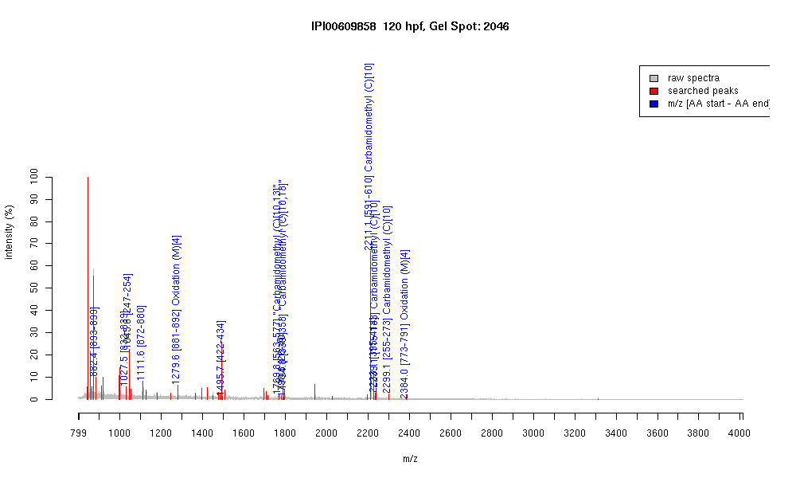

| Name | PREDICTED: similar to Zinc finger protein 208 |
|---|---|
| MW | 105624.6 |
| PI | 9.29 |
| Mascot Protein Score | 73 |
| Masses (matched / unmatched) | 14 / 39 |

| Peptide | MZ (calc) | MZ (observed) | Error (DA) | Error (PPM) | Start | Stop | Modifications |
|---|---|---|---|---|---|---|---|
| NLTEHLR | 882.4791 | 882.437 | -0.0421 | -48 | 893 | 899 | |
| QNLTKHMR | 1027.5466 | 1027.5179 | -0.0287 | -28 | 832 | 839 | |
| QYLTEHVR | 1045.5425 | 1045.5637 | 0.0212 | 20 | 247 | 254 | |
| EKPHTSVWK | 1111.5895 | 1111.5637 | -0.0258 | -23 | 872 | 880 | |
| AISMERDSLGGK | 1279.6311 | 1279.5718 | -0.0593 | -46 | 881 | 892 | Oxidation (M)[4] |
| STHTGEKLYTCQK | 1495.7209 | 1495.7308 | 0.0099 | 7 | 422 | 434 | |
| AHTGEKPYPCQHCGK | 1769.7847 | 1769.8312 | 0.0465 | 26 | 563 | 577 | "Carbamidomethyl (C)[10,13]" |
| LLALKEESQDQMEEK | 1790.884 | 1790.8492 | -0.0348 | -19 | 26 | 40 | |
| SHTGDQLYICQQCGK | 1794.7898 | 1794.8094 | 0.0196 | 11 | 339 | 353 | "Carbamidomethyl (C)[10,13]" |
| IHSGVKPHACHQCGKSFSCK | 2211.0369 | 2211.1067 | 0.0698 | 32 | 591 | 610 | Carbamidomethyl (C)[10] |
| IHTGEKPHTCQQCGKSFTCK | 2233.031 | 2233.0925 | 0.0615 | 28 | 395 | 414 | |
| IHTGEKPYTCQQCGNSFIR | 2239.0383 | 2239.1282 | 0.0899 | 40 | 115 | 133 | Carbamidomethyl (C)[10] |
| IHTGEKPYSCQQCEKSFTR | 2299.0593 | 2299.1465 | 0.0872 | 38 | 255 | 273 | Carbamidomethyl (C)[10] |
| EELMQLKEESEDQNEMEEK | 2384.0115 | 2383.9756 | -0.0359 | -15 | 773 | 791 | Oxidation (M)[4] |